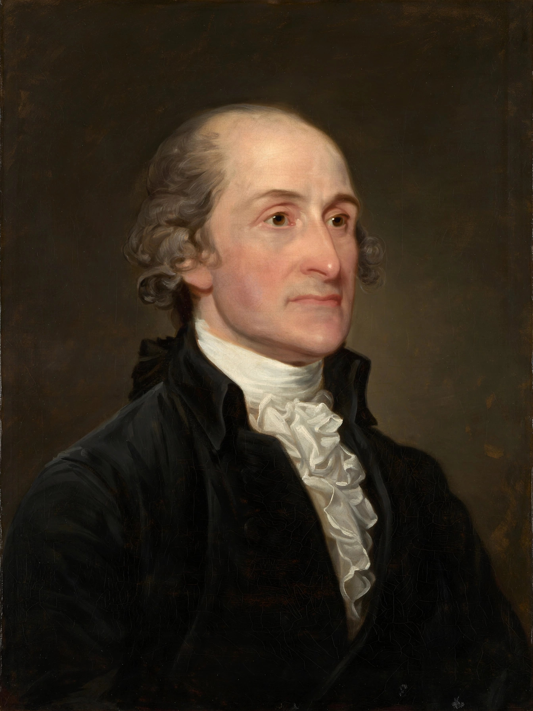

| Born | 23 December 1745 New York City, British America |
|---|---|
| Died | 17 May 1829 (aged 83) Bedford, New York, U.S. |
| Offices | 1st Chief Justice of the United States (1789–1795); Governor of New York (1795–1801) |
| Previous offices | President of the Continental Congress; U.S. Secretary of Foreign Affairs |
| Party | Federalist |
| Spouse | Sarah Livingston (m. 1774) |
John Jay (December 23, 1745 – May 17, 1829) was an American statesman, patriot, diplomat, abolitionist, signatory of the Treaty of Paris, and a Founding Father of the United States. He served as the first chief justice of the United States from 1789 to 1795, and was a co-author, with Alexander Hamilton and James Madison, of The Federalist Papers.
Jay was born in New York City to a wealthy family of Huguenot and Dutch descent and educated at King's College (now Columbia University). Admitted to the bar in 1768, he rose quickly in New York politics. A delegate to the First and Second Continental Congresses, he initially favoured reconciliation with Britain but became a committed revolutionary; he served as president of the Continental Congress in 1778–79 and drafted New York's 1777 constitution, serving briefly as the state's chief justice. As minister to Spain and then as a peace commissioner, he helped negotiate the 1783 Treaty of Paris, which recognised American independence and fixed generous boundaries for the new nation. Under the Articles of Confederation he served as Secretary of Foreign Affairs.
Frustrated by the weakness of the Confederation, Jay contributed five essays to The Federalist Papers, principally on the dangers of foreign intrigue and the benefits of union. In 1789 President Washington appointed him the first Chief Justice of the United States. The early Jay Court heard few cases but established important precedents, including Chisholm v. Georgia (1793), which was promptly overturned by the Eleventh Amendment. Jay's circuit-riding duties and the Court's modest standing frustrated him; he resigned in 1795 after being elected Governor of New York.
While still chief justice, Jay was sent to London in 1794 to avert war with Britain. The resulting Jay Treaty secured British evacuation of northwestern forts and limited trade concessions but failed to resolve impressment and compensation for enslaved people carried away during the war; it provoked furious opposition from Jefferson's Republicans, who burned Jay in effigy, though Washington and the Senate upheld it. As governor of New York (1795–1801), Jay signed a gradual emancipation law in 1799. A lifelong opponent of slavery, he had earlier presided over the New York Manumission Society, even while his own household held enslaved people for parts of his life.
Jay declined reappointment as chief justice in 1800, writing that the Court lacked "energy, weight, and dignity". He retired to his farm at Bedford, New York, where he died in 1829, the last surviving member of the first Supreme Court and one of the last of the revolutionary generation.
From Wikipedia, the free encyclopedia.